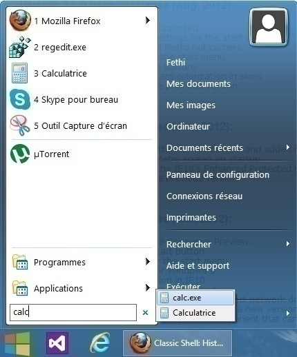

Hi every body...
i have a question please, when i click on start menu (Classic Start Menu) and type a name of an application in search box (quick find)
i get two appliactions one for the name of the application (our target) and the second for the exe file of this application,
this happens only with windows applications ex: Paint, regedit, calculator.... (attached picture explains what i mean)

thanks a lot for this useful & cool application (Classic Start Menu) wich is indispensable for Windows 8 (my case).